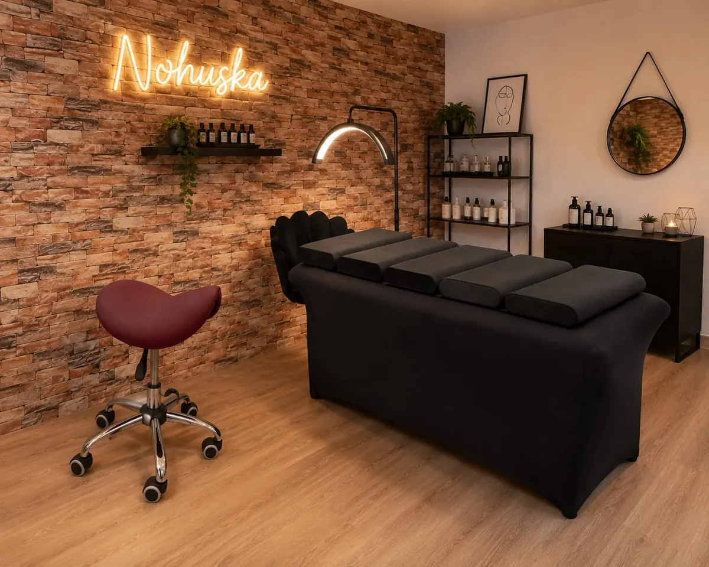

Servicios para hombre · Nohuska Beauty Lab
Estética masculina en Granollers.
El cuidado de Nohuska, también para hombre. Ordenar las cejas, alinear un bigote rebelde, cuidar los poros o disimular huecos: elige un servicio o pide orientación.

Empieza por lo que quieres mejorar
Tus cejas, con la forma que tú elijas
Si quieres arreglarlas sin dejarlas demasiado finas, explica qué grosor deseas conservar. Tener pelo desordenado no es lo mismo que tener zonas sin pelo: la elección parte de esa diferencia.
Depilación y mantenimiento natural. Para ordenar el contorno sin contratar el diseño Premium.
Ver diseño de cejas masculino →Visagismo, diseño, depilación y dirección del pelo; Natural Brow™ añade tinte. Ambas citas duran aproximadamente una hora. Se puede buscar un acabado ordenado o más elevado, según el pelo y tu preferencia.
Elegir laminado masculino →Si solo quieres color, el tinte híbrido de cejas con visagismo cuesta 35 € y no incluye laminado. El laminado no crea pelo en los huecos.
¿El bigote se riza o cuesta peinarlo?
El laminado o alisado de bigote cuesta 48 € y busca orientar el pelo para un acabado más alineado. La cita dura unos 50 minutos, según la cantidad de pelo. No es un corte de barba ni garantiza que todos los bigotes queden igual.
Ver el cuidado del bigote y solicitar cita →Poros, impurezas y cuidado facial
Limpieza facial coreana para hombre: 50 € / aproximadamente 1 hora. Incluye limpieza vegana K-Beauty, exfoliación, extracción adaptada de puntos negros, mascarilla y masajes facial y capilar. La piel y su sensibilidad orientan el protocolo, no el género.
Ver qué incluye y reservar facial →Cejas con huecos: antes de elegir una técnica
Si tienes poco pelo y quieres completar visualmente la ceja, Nohuska valora la forma de partida, la piel, los huecos y el acabado que prefieres. El microblading y el nanoblading masculinos cuestan 297 € cada uno, sin repaso incluido. Son técnicas manuales de trazos; la sesión inicial de nanoblading dura unas 2 horas.
La micropigmentación de cejas cuesta 230 €. Hair Stroke, Powder Brows y correcciones antiguas requieren valorar el caso y su presupuesto; no se les asigna automáticamente esa tarifa.
Si buscas un «tatuaje de cejas para hombre», en Nohuska puedes comparar técnicas de pigmentación manuales y con máquina. No son nombres intercambiables ni una oferta adicional de tatuaje convencional.
Si se te está cayendo el pelo de las cejas y no sabes por qué, conviene valorar la causa con un profesional sanitario. La pigmentación camufla visualmente: no detiene la caída ni hace crecer pelo.
Cuando se transparenta el cuero cabelludo
La micropigmentación capilar puede reducir visualmente el contraste en zonas con poca densidad o plantear un efecto rapado. Desde 450 €: la tarifa de entradas incluye tres sesiones, con ese importe total. Otras zonas y objetivos requieren presupuesto propio tras una valoración gratuita.
No frena la caída, no genera cabello ni sustituye la evaluación de su causa. Puedes consultar aunque todavía no sepas qué zona o acabado elegir.
Valorar entradas, coronilla, densidad o rapado →La valoración se adapta a tu punto de partida
Explica qué quieres conservar y qué te gustaría cambiar. En cejas se acuerdan forma y definición; en bigote, dirección; en capilar, zona y efecto visual. Antes de cerrar una cita se confirma el servicio y su alcance.
Puedes revisar los casos propios publicados en Results Lab. Cada imagen identifica lo que muestra; los casos femeninos no se presentan como resultados masculinos. Las opiniones del centro en Google tampoco equivalen a testimonios de todos estos servicios.
Una sola sede: Granollers
Nohuska Beauty Lab está en Avinguda Sant Esteve, 40, 08402 Granollers. Si vienes desde Canovelles, Les Franqueses, La Roca, Cardedeu, Lliçà d’Amunt o Lliçà de Vall, confirma tu cita antes de desplazarte. No hay una sede distinta en cada municipio.
Una consulta por WhatsApp no confirma una reserva. Acordaremos contigo el tratamiento, la fecha y la hora.
Consulta sin tener que saber el nombre.
Describe lo que quieres mejorar o elige un servicio al principio de la página. Los botones conservan tu elección; la valoración gratuita sigue siendo una consulta, no una reserva de tratamiento.